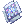

Meth Sura
| Sura | |||||||||||||||||||
|---|---|---|---|---|---|---|---|---|---|---|---|---|---|---|---|---|---|---|---|
| Job Base: | Monk | ||||||||||||||||||
| Written By: | Milly | ||||||||||||||||||
| |||||||||||||||||||
Overview
Sura is the third job class for Champion (you can change into a Sura as a Monk but it is highly recommended not to). Suras are much more powerful than their second job and transcendent counterparts. They gain a variety of Area of Effect abilities, the ability to have up to 15 maximum spheres instead of 5 thanks to Rising Dragon, new powerful buffs and the ability to start a combo instantly thanks to Dragon Combo and Flash Combo.
Sura's main damaging abilities, Tiger Cannon and Gates of Hell gain damage from having high Maximum HP. This means their builds usually revolve around balancing a high health pool with a high amount of ATK. Finally, Suras have gained one of the most debilitating debuffs in the game, Cursed Circle, which allows a Sura to prevent up to 14 non-boss type enemies from attacking or casting skills for 7 seconds. All of these combined make Sura a highly desirable class for PvP, War of Emperium and Battlegrounds.
Additionally, thanks to Steel Body from the Monk skill tree, Sura still remains a viable tank for the majority of Instances and can be useful for tanking certain MvPs.
Disclaimer: I have not finished this guide and I've been seeing people linking to this page. There are some errors with the information and I will try and add to the guide as time goes on.
Stats
Here is an overview of the stats and what they do that benefit Sura.
- STR - Increases your Status Attack (the left ATK number on your stats screen) by 1 per point Increases your weight limit by 30 per point. One of Sura's main stats.
- AGI - Increases your Attack Speed and Flee. Having high AGI increases the damage of Sky Net Blow and ASPD affects how fast you can use combo skills and how fast you can snap around.
- VIT - Increases your Maximum HP by 1% per point and increases the effectiveness of healing items. Tiger Cannon and Gates of Hell's damage increases based on your Maximum HP and stun immunity is granted at 100 VIT which makes this important.
- INT - Increases your Maximum SP by 1% per point and increases the effectiveness of SP healing items. Reduces variable cast time. SP affects Tiger Cannon and Asura Strike and the cast time is very handy. Good to invest points into.
- DEX - Increases Status Attack by 1 per 5 points, increases your HIT by 1 per point reduces variable cast time with twice the effectiveness as INT and increases attack speed. Very valuable stat even in small numbers.
- LUK - Increases your total ATK by 1 and your HIT by 1 every 3 points. Increases perfect dodge. Useful in very small numbers when STR becomes expensive to put points into.
Builds
The type of build that you are using generally depends on the main skill you want to use. Most people make hybrid builds that incorporate the three damaging skills, Tiger Cannon, Gates of Hell and Asura Strike, so that the only thing they need to do is swap their equipment to do something else. These builds below should guide you towards the stats needed to help you make the most of what skill you choose to use.
Sky Net Blow [ Leveling Build ]
- STR - 80+
- AGI - 80+
- VIT - 80 - 100
- INT - 45
- DEX - 60 - 80
- LUK - 20 - 40
At the lower levels, while you have very little skill points to spend, using Sky Net Blow is pretty much your only choice - it's the best Area of Effect ability you can get early and only requires you to invest a few points into Sky Net Blow and Gentle Touch-Energy Gain as part of the build. This build lets you spam Sky Net Blow without having to worry about spheres as long as you have Energy Gain active (and the SP required to use Sky Net Blow). As you get more skill points, you should prioritize getting Rising Dragon to level 10. After that, you should aim towards getting Tiger Cannon to level 10.
Sky Net Blow damage increases with AGI, so AGI serves as a stat to help you survive and a damage stat. VIT is needed for increasing your health - you'll most likely be taking damage while using this skill as you need to gather enemies up and wait for them to be in range of Sky Net Blow when you use it. INT is to help with SP regen and giving you a nice SP pool to use the skill with.
When you have level 5 or higher Rising Dragon, using Power Absorb and Dangerous Soul Collect is a very effective way of recovering SP and can be used in your entire leveling career if you wish.
This build is recommended until around level 135 - at this point, the enemies you'll be fighting to level will have too much HP for the skill to be effective in killing them. Hopefully, by then you will be able to swap into your real damaging skills such as Tiger Cannon and Flash Combo.
Tiger Cannon [ All-around build ]
- STR - 100 - 120 (If you are using Temporal Boots of Strength)
- AGI - 50 - 70
- VIT - 100 - 120 (If you are using Temporal Boots of Vitality)
- INT - 100
- DEX - 90
- LUK - 20 - 40
Tiger Cannon is one of the strongest tools a Sura has available. It is an Area of Effect ability that can be used on its own or used in a combo with Dragon Combo in order to double it's damage output. This combo bonus does not work when used with Flash Combo. Tiger Cannon, when used on its own or through Dragon Combo, will drain a percentage of your Max HP and Max SP. If used through Flash Combo, it will not drain anything, which makes it a popular choice to use for any PvM or MvP activities. The downside with Flash Combo, aside from the reduced damage, is that it prevents you from doing anything else (even using items) which makes it risky to use in certain situations, mainly any PvP activity.
Although Flash Combo is an excellent leveling tool, the problem with using it is that if the enemy you target dies during the Fallen Empire part of the skill, it will not cast Tiger Cannon and just skip to the Sky Net Blow part. So this is why I recommend a different build for the earlier levels, since Fallen Empire is usually enough to kill individual enemies.
Tiger Cannon damage scales off of the users ATK, Max HP and Max SP. In terms of increasing damage, MaxHP has the biggest effect, then ATK slightly behind, then MaxSP. This means for your build you should aim to have a high health pool with a high amount of ATK. Since the gears that increase these stats can be expensive, using SP increasing gear can be a great alternative and also can help with your Asura Strike damage if you choose to use it.
Because the skills require nearly the same stats, it is possible to also use Gates of Hell effectively with this build. There is a good amount of DEX and INT to reduce the variable cast time if you wish to cast it on its own or you can use it from the Dragon Combo combo for high single target damage. A common strategy for doing very high single target damage is to do a combo Tiger Cannon and then immediately after do another combo for Gates of Hell as you'll do more damage with Gates of Hell thanks to the HP drain from Tiger Cannon.
While this is not a dedicated Asura Strike build, the damage is high enough to still kill low-tier MVPs with ease and players provided you have the right equipment on.
Asura Strike [ MVP, PVP ]
- STR - 120
- AGI - As low as possible
- VIT - 80 - 100
- INT - 100 - 120
- DEX - 80 - 100
- LUK - 20 - 40
Although not as powerful as it was in pre-renewal, Asura Strike is still one of the hardest hitting attacks in the game. There are plenty of MVPs that can be one shot with Asura Strike, and the number only increases as you start giving yourself more buffs or MVP with more than one person, for example, a priest with Lex Aeterna will make it possible for you to one shot the majority of field MVPs. In WoE/PvP, most people do not opt for an only Asura Strike build the skill forces you to be unable to regenerate SP for 10 seconds after casting, making it more of an all-in attack than it used to be. This means there are situations where it can be used effectively, but it shouldn't be the only skill you use.
Asura Strike damage is based on your Max SP (and your current SP percentage) and your ATK. It is recommended to equip as much SP or ATK increasing gears because of this. Additionally, you must always be as close to full SP as possible before using the skill to maximize the damage you do.
This skill has great synergy with Cursed Circle as it will prevent enemies around you from interrupting your cast or, verus players, from dodging the skill by using Hide.
Equipment
I've mentioned the stats needed to make the above builds shine so I'm making a list of items that are good for Sura and a brief explanation why they are good. You will have to pick and choose which items you use based on what you want to do with your Sura. Also, these are just my personal recommendations, do not feel like these are the only options, but they are notable options.
Headgears
Top Headgears
Obtained from the Cash Shop. Different stats on NovaRO. Gives 7% increase to Max HP and Max SP which makes it one of the better currently available headgears for Tiger Cannon and also is useful for Asura Strike. Unfortunately, it is not slotted.
Obtained through a quest or the Cash Shop. Currently the best leveling headgear and one of the best for overall PVM. Can be slotted with an  Incubus Card,
Incubus Card,  Dark Pinguicula Card,
Dark Pinguicula Card,  Essence of Evil STR3 or a
Essence of Evil STR3 or a  Bungisngis Cardif the hat is refined to +8 or higher.
Bungisngis Cardif the hat is refined to +8 or higher.
Obtained through a quest. The current best choice of headgear for dealing damage to Demi-Human enemies. Increases your ATK based on your Job Level.

Obtained through a quest. The current best choice of headgear for reducing damage from Demi-Human enemies.

Obtained from the Cash Shop. Reduces damage from Boss type enemies by 10% at the cost of increasing damage from everything else by 5%. A solid headgear for tanking in Steel Body or just to wear to help mitigate damage while fighting bosses. I recommend slotting an  Essence of Evil VIT3or Bungisngis Cardfor survivability,
Essence of Evil VIT3or Bungisngis Cardfor survivability,  Nightmare Cardor a
Nightmare Cardor a  Gemini-S58 Cardfor status immunity.
Gemini-S58 Cardfor status immunity.
Middle Headgears

The only slotted middle headgear that drops from enemies. Does not give anything but a slot. Use either an Incubus Card, Dark Pinguicula Cardor an Essence of Evil STR3in it for damage or Gemini-S58 Cardfor status immunity. For PVP you may want to use a card such as  Giant Hornet Cardfor elemental resistances.
Giant Hornet Cardfor elemental resistances.

Requires the original Evil Wing Ears and a Spiritual Auger from the Cash Shop to slot them. Offers +1 STR for a minimal increase in damage over the other middle headgears.

Obtained from the Cash Shop. Offers 2% ATK and 2% MATK as well as +1 DEX. Not slottable. Is an okay option but doesn't compare to slotted middle headgears

Obtained from the Cash Shop. Used for reducing damage from Demi-Human enemies.
Lower Headgears

Obtained from the Cash Shop. Gives 1% Max HP for increasing Tiger Cannon and Gates of Hell damage. Increases the healing effectiveness of Meat while giving a chance for them to drop. Helpful for leveling with the use of Hell Poodle Card to make Meat a viable healing option.


Obtained from the Cash Shop. Gangster Scarf can be obtained through a quest as well. Another damage increasing option.


Obtained from Cash Shop. The lower headgear options for reducing damage from Demi-Human enemies.
Weapons
Purchased from the Ghost Palace instance using Gray Shards. This piece of equipment should be one of your top priorities if you plan on using your Sura as a damage dealer for any instances or for farming. Allows you to gain SP and HP back on a chance when dealing damage with any of your physical skills. A powerful weapon at higher refines as well. The leeching effect stacks with  Rideword Hat [1]. I'd recommend either a
Rideword Hat [1]. I'd recommend either a  Hunter Fly Cardfor general use,
Hunter Fly Cardfor general use,  Abysmal Knight Cardfor MVPing or a
Abysmal Knight Cardfor MVPing or a  White Knight Cardfor all around use if you also plan on using this weapon while wearing a shield with a
White Knight Cardfor all around use if you also plan on using this weapon while wearing a shield with a  Khalitzburg Knight Card.
Khalitzburg Knight Card.

Dropped from a wide variety of monsters. Like most other Crimson Weapons, it can drop with pre-determined elements; Neutral, Fire, Water, Wind, Earth, Holy, Shadow and Poison. At +10 or higher it becomes an extremely strong weapon, but is on par with most other weapons until then. Due to the popularity of the item, they are fairly easy to find and are relatively cheap to buy unrefined. These make great weapoins even if they aren't very high refined thanks to the elements that they come with, which makes leveling a lot easier since you don't have to endow yourself, which in the case of Holy is very helpful. Since this has 2 slots, I personally recommend either using 2 Hunter Fly Cardsfor leveling, 2 White Knight Cardsif you have a very high refined Crimson Mace or a White Knight Cardand Abysmal Knight Cardfor fighting MVPs.
Obtained from the final boss of the Charleston Crisis instance. A very high ATK weapon. The bigger brother to the  Carga Mace [2], being a level 4 weapon and much more expensive. If you use this weapon, it should be at a high refine (+7 or higher). I'd recommend only investing into getting a high refined version of this weapon when you have the White Knight Cardand Khalitzburg Knight Cardset available.
Carga Mace [2], being a level 4 weapon and much more expensive. If you use this weapon, it should be at a high refine (+7 or higher). I'd recommend only investing into getting a high refined version of this weapon when you have the White Knight Cardand Khalitzburg Knight Cardset available.
Drops from Anolian. A powerful weapon that makes an excellent Asura Strike weapon at the higher refines. Either use 2 Hunter Fly Cardsif you have an over-refined version of this weapon and don't want to use a  Thanatos Hammer [1] for Tiger Cannon or use 2 Abysmal Knight Cards to help with your Asura Strike damage. Since the release of Crimson Weapons, this weapon should be a cheap option.
Thanatos Hammer [1] for Tiger Cannon or use 2 Abysmal Knight Cards to help with your Asura Strike damage. Since the release of Crimson Weapons, this weapon should be a cheap option.

Drops from Tatacho. Inexpensive mace that is easily obtainable and as such is easy to over-refine. Can be useful for the food drops when killing brute enemies if you feel that you want some extra stats for free. At +10 or higher, this weapon becomes strong due to the three card slots it has. Until that point, it's much easier to just invest in a +5 - +7 Carga Mace. I would recommend using racial cards such as  Goblin Carddepending on which type of enemy you're fighting.
Goblin Carddepending on which type of enemy you're fighting.

Drops from Moonlight Flower or can be obtained from  High Weapon Box. A defensive mace mainly used for PVP and War of Emperium, however, it boasts mediocre attack and is a level 4 weapon which makes it usable for doing damage if you have no other options. Can also be Malangdo Enchanted to have useful defensive stats such as MDEF.
High Weapon Box. A defensive mace mainly used for PVP and War of Emperium, however, it boasts mediocre attack and is a level 4 weapon which makes it usable for doing damage if you have no other options. Can also be Malangdo Enchanted to have useful defensive stats such as MDEF.
Obtained from the Battlegrounds which requires you to be level 170 to participate in. The strongest weapon for fighting Demi-Human enemies when refined to high levels. It is recommended that you have this refined to at least +6, otherwise, it is not worth using.
Armour

Obtained from the Battlegrounds which requires you to be level 170 to participate in. A very high increase in Max HP and some additional resistances to Demi-Human enemies. A very strong armor for Tiger Cannon and Gates of Hell as you only need the Armor for the HP bonus and don't need to wear a full set of gear like the Gray set.
A potential reward from the  Prize of Heroobtained from the MVP of Bios Island and Morse's Cave. Underappreciated armour. Gives 5% Max HP and SP and gives +10 to ATK. Has a chance of auto-casting Level 10 Kyrie Eleison when doing auto attacks or reflecting damage. When used with a
Prize of Heroobtained from the MVP of Bios Island and Morse's Cave. Underappreciated armour. Gives 5% Max HP and SP and gives +10 to ATK. Has a chance of auto-casting Level 10 Kyrie Eleison when doing auto attacks or reflecting damage. When used with a  Peco Peco Cardit comes close to the damage from Glorious Suit but has more functionality due to the auto-cast and it giving 77 defense unrefined, whereas the Glorious Suit has 10 defense.
Peco Peco Cardit comes close to the damage from Glorious Suit but has more functionality due to the auto-cast and it giving 77 defense unrefined, whereas the Glorious Suit has 10 defense.

Dropped from Satan Morocc and his weakened version. A good armor for Asura Strike on its own and a decent armor for Tiger Cannon if carded with a Peco Peco Card. Can also be enchanted to have up to +3 of a bonus stat on it. INT would be the better option. Has a combo with  Diabolus Ring [1] which increases your ATK by 3% to make this a strong set throughout all levels.
Diabolus Ring [1] which increases your ATK by 3% to make this a strong set throughout all levels.
Obtained from the Guild Dungeon Investment System. The standard choice when it comes to PVP activities. Should be refined to at least +6. You can wear this without the full set when it comes to PVP and War of Emperium because of the defensive stats it offers. It is recommended that you use a Peco Peco Card for survival and extra damage or a  Marc Card to start off with. If you have money to spend and have good equipment in your other slots, solid options for Sura are
Marc Card to start off with. If you have money to spend and have good equipment in your other slots, solid options for Sura are  Angeling Card to reduce damage from the majority of common elements or
Angeling Card to reduce damage from the majority of common elements or  Ghostring Card to lower the risk of other Suras killing you or reducing the damage from Hell Plant.
Ghostring Card to lower the risk of other Suras killing you or reducing the damage from Hell Plant.
Thanks to Gentle Touch-Cure or 100 MDEF, you don't always have to use a Marc Cardfor PVP, however, if you do not have access to gear for getting 100 MDEF, it is highly recommended to wear a Marc when it comes to War of Emperium.
Shields

Drops from Valkyrie. The best general purpose shield, giving you resistances to common elements and a little MDEF boost. This is the default shield to use for Battlegrounds and War of Emperium. Should be slotted with a card that reduces damage taken from a race such as  Thara Frog Card, an all around defensive card like
Thara Frog Card, an all around defensive card like  Hodremlin Cardor an
Hodremlin Cardor an  Alice Cardif you'll be using the shield for MVPs. If you are using a White Knight Card in your weapon, it's recommended to also use a Khalitzburg Knight Card.
Alice Cardif you'll be using the shield for MVPs. If you are using a White Knight Card in your weapon, it's recommended to also use a Khalitzburg Knight Card.
-  Immune Shield [1]
Obtained through a variety of methods but the most recommended are Battlegrounds and Monster Hunter. This shield is useless until +7. At +7 and above, it has a nice use for farming, MVPs and in certain situations, PVP.

Drops from Knocker. When used with a  Bison Horn [1]it ends up being a nice tanking shield when using Steel Body as the reflect lets you keep the monsters attention on you. Ar higher levels, using this set with a
Bison Horn [1]it ends up being a nice tanking shield when using Steel Body as the reflect lets you keep the monsters attention on you. Ar higher levels, using this set with a  Hero Judgement Shawl [1]gives you more chances to auto-cast the Level 10 Kyrie Eleison effect.
Hero Judgement Shawl [1]gives you more chances to auto-cast the Level 10 Kyrie Eleison effect.
Garments
Obtained from the Faceworm's Nest instance. You can read more about how the skins work here. For Sura, you'll either want VIT enchantments to enhance your Tiger Cannon and Gates of Hell damage or INT to enhance your Asura Strike damage by making your SP increasing equipment have a better effect This garment also has a combo with Temporal Boots to increase your HP and SP, making it the ideal garment for Sura damage. Depending on your stat priority, you'll either want to use a  Wakwak Cardor a
Wakwak Cardor a Jejeling Cardin this garment.

Dropped by Nidhoggur's Shadow. A mediocre garment for Asura Strike if you do not have access to Temporal Boots and a Giant Snake Skin but not useful for anything else. You'll want either a Wakwak Card or an Aliot Card to increase your Asura Strike damage.
Obtained from the Guild Dungeon Investment System. Part of the WoE Robe set, used as defensive gear in PVP. Do not wear unless you also have a  WoE Robe [1] and
WoE Robe [1] and  WoE Shoes [1] equipped. Very common and cheap to get. Cards to use for PVP are
WoE Shoes [1] equipped. Very common and cheap to get. Cards to use for PVP are  Raydric Card if you are worried about neutral damage,
Raydric Card if you are worried about neutral damage, Noxious Card as a balance between reducing ranged damage and having some neutral resistance or
Marse Card and similar elemental reduction cards if you're worried about a particular element. If you feel that Asura Strike is an issue for your character to survive, you can also use a
Deviling Card card but only recommended for tanking Asura Strike.
Boots

Obtained from Old Glast Heim using Temporal Crystals. You can read more about Temporal Boots here. These can be enchanted for massive stat boosts such as Fighting Spirit 7 for even more ATK and Bear's Might for a chance at getting +200 STR when being attacked. Temporal STR boots are a popular all around choice due to the massive ATK boost that you gain from having 120 STR. Due to having 120 STR to get the best effect from these boots, you can also use Glove of Shura for a massive attack boost using Asura Strike or combining it with attack percentage gear like
 Hero Ring (when enchanted) and
Hero Ring (when enchanted) and  Pendant of Maelstrom [1] for very hard hitting Tiger Cannon. A
Pendant of Maelstrom [1] for very hard hitting Tiger Cannon. A  Green Ferus Card card is ideal for Tiger Cannon and Gates of Hell,
Green Ferus Card card is ideal for Tiger Cannon and Gates of Hell,  Verit Card can be used for an all around build and
Verit Card can be used for an all around build and  Abandoned Teddy Bear Card is ideal for Asura Strike damage.
Abandoned Teddy Bear Card is ideal for Asura Strike damage.

Obtained from Old Glast Heim using Temporal Crystals. Should be enchanted with Fighting Spirit 7 and Bear's Might, ideally. The alternative to Temporal Boots of Strength, requiring you to have 120 VIT over 120 STR so it focuses more on having a much larger health pool for Tiger Cannon and Gates of Hell damage. When paired with a high VIT enchanted  Giant Snake Skin [1] this set helps you reach the highest health pool possible. Because these boots require you to have 120 VIT, use a Green Ferus Card to compliment the boots best.
Giant Snake Skin [1] this set helps you reach the highest health pool possible. Because these boots require you to have 120 VIT, use a Green Ferus Card to compliment the boots best.
Obtained from the Guild Dungeon Investment System. Part of the WoE Robe set, used as defensive gear in PVP. Do not use unless you are wearing it with a WoE Robe [1] and  WoE Muffler [1]. Because this is a purely defensive item, the only card option is Green Ferus Card.
WoE Muffler [1]. Because this is a purely defensive item, the only card option is Green Ferus Card.
Accessories
Purchased and Enchanted with Token of Herowhich are obtained by completing Bios Island and Morse's Cave. An amazing accessory that is very good in both PvM and PvP. Can be enchanted to have at most +5 VIT, +5% Max HP, +5% ATK and some defense or magic defense, which makes it excellent for Tiger Cannon and Gates of Hell. Alternatively, you can enchant it for Max SP, ATK and INT for Asura Strike better accessories for that job.
Obtained from Nightmarish Jitterbug by merging a  Pendant of Chaosand a
Pendant of Chaosand a  Pendant of Harmonytogether. One of the better damage accessories which also offers a slot. Has a chance to auto-cast Maelstrom which can protect you from ground targeted skills, however, the cast delay can hurt you in some situations. You can put an Essence of Evil STR3or a
Pendant of Harmonytogether. One of the better damage accessories which also offers a slot. Has a chance to auto-cast Maelstrom which can protect you from ground targeted skills, however, the cast delay can hurt you in some situations. You can put an Essence of Evil STR3or a  Gold Scaraba Cardfor a minor improvement in Asura Strike damage.
Gold Scaraba Cardfor a minor improvement in Asura Strike damage.
 Str Glove [1] and
Str Glove [1] and  Vit Glove [1]
Vit Glove [1]
Stat Gloves are obtained using Splendide Coins. These are both relatively cheap options that are good throughout the entire game. Choose one of them depending on your stat priority, although Vit Glove [1] can be used as a defensive accessory all around. For PvM, because these accessories are cheap, I would recommend using these accessories as a stepping stone to better gear, and as such, would card with relatively cheap cards that will improve your damage or make your life easier in certain situations, such as  Phen Card for uninterruptable cast time,
Phen Card for uninterruptable cast time, Essence of Evil STR2 as a cheap source of ATK or
 Mantis Card as an even cheaper source,
Mantis Card as an even cheaper source, Hell Poodle Card while leveling to make potting inexpensive.

Drops from Wraith Dead and Dark Priest. An extremely cheap and easy to obtain defensive accessory that can be used in place of Vit Glove [1]. Usually used in PVP settings because of the 15 MDEF it offers. Recommended to put helpful PvP cards in them such as Smokie Cardand
Vit Glove [1].

Obtained from Battlegrounds. Another defensive accessory that offers resistances to elements, a decent HP boost and a boost to attack speed. A very good ring which can also be used for general farming or tanking if you wish.

These accessories are some of the cheapest accesssories in the game that also offer useful stats for Sura. If you're really struggling for money but want to have accessories that give stat bonuses and useful for most characters then you can invest in these. You can put any cards that you feel would benefit you in these.  Silverwork Bracelet [1] makes an excellent accessory for putting in cards that give you extra drops such as
Silverwork Bracelet [1] makes an excellent accessory for putting in cards that give you extra drops such as  Plasma Card or
Plasma Card or  Raydric Archer Card because all classes can equip it from a relatively early level.
Raydric Archer Card because all classes can equip it from a relatively early level.
Equipment Sets
These are items that need to be worn in a full set for them to really shine. These items have the benefit of being cheap and can last you until max level if you are unable to replace equipment.
- Gray Set:
 Gray Helmet [1],
Gray Helmet [1],  Gray Robe [1],
Gray Robe [1],  Cloak of Gray [1] and
Cloak of Gray [1] and  Boots of Gray [1]
Boots of Gray [1]
Each piece of the set is purchased from the Ghost Palace instance using Gray Shards. Combined, the set offers you +25% Increased HP and SP, +15% Neutral Resistance and +10% MATK. The HP, SP and Neutral Resistances make this set one of the best tanking sets in the game for Sura and a handy leveling set. Each item also offers holy resistance which can be helpful in some situations. Each piece of equipment having a slot means that you can enhance the bonuses even more or use the slots to help with immunity to statuses. I recommend these cards depending on the item, with a brief explanation for why:
- Gray Helmet [1]: Incubus Cardto use with a
 Succubus Card, Nightmare Card for sleep immunity if required or Bungisngis Card if refined for HP.
Succubus Card, Nightmare Card for sleep immunity if required or Bungisngis Card if refined for HP. - Gray Robe [1]: Succubus Cardfor health, Peco Peco Card for even more health or Marc Card for when you're fighting bosses or regular enemies who can freeze you.
- Cloak of Gray [1]: Raydric Cardor
Noxious Cardfor damage reduction.
- Boots of Gray [1]: Green Ferus Cardor Verit Cardfor survivability.
Skills
Here will be a short description of important skills and their uses.
Acolyte
- Increase Agility - Increases the target's AGI and Movement Speed. A very important buff that I recommend maxing.
- Blessing - Increases the target's DEX, INT and STR. Another very important buff that I recommend maxing.
- Decrease Agility - Decreases an enemy's AGI and Movement Speed. Extremely useful in PVP but limited usage against monsters. Max for PVP but otherwise don't invest in it.
- Angelus - Increases soft defense for you and your party. Recommended to have for fighting monsters but otherwise, I would not invest points into.
- Warp Portal - Allows you to use the command "/memo" to save a location on certain maps. Can be used for quick access to dungeons such as Sphinx F4 and outside the portal to Magma Dungeon 2. Needed for Pneuma.
- Pneuma- Blocks ranged attacks, causing them to miss. Can still be knocked back by ranged knockback effects, even if they miss you. Useful in any situation you are against a ranged enemy.
Monk and Champion
- Call Spirits - Used to summon spheres one at a time. Although you get a better alternative as a Champion, Call Spirits can still be used in certain situations, such as quickly getting a sphere to snap out of danger.
- Absorb Spirits - Absorb the spheres from your target to recover SP. Can be used on non-boss enemies to have a chance at recovering SP. Used to maintain your SP in PvM and to hinder other Suras in PvP.
- Dangerous Soul Collect - The Champion alternative to Call Spirits. Summons the maximum amount of spheres you can have, which means 5 without Rising Dragon and up to 15 with Rising Dragon.
- Snap - Your main mobility skill. Your snap speed depends on your attack speed. Costs a sphere to use unless you're in Fury status.
Leveling
Leveling places and tactics go here.
Recommended format:
- Lv1 - Lv30
- Name of the map & monsters
- Lv31 - Lv70
- Name of the map & monsters